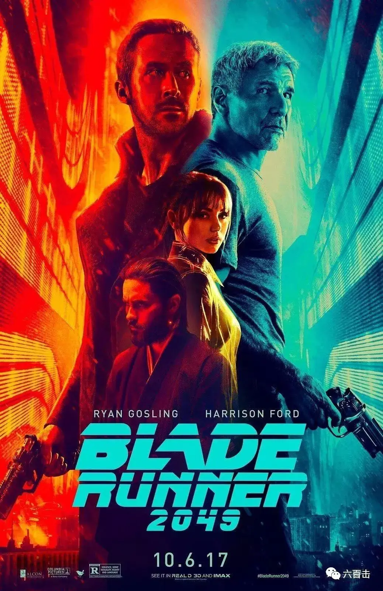
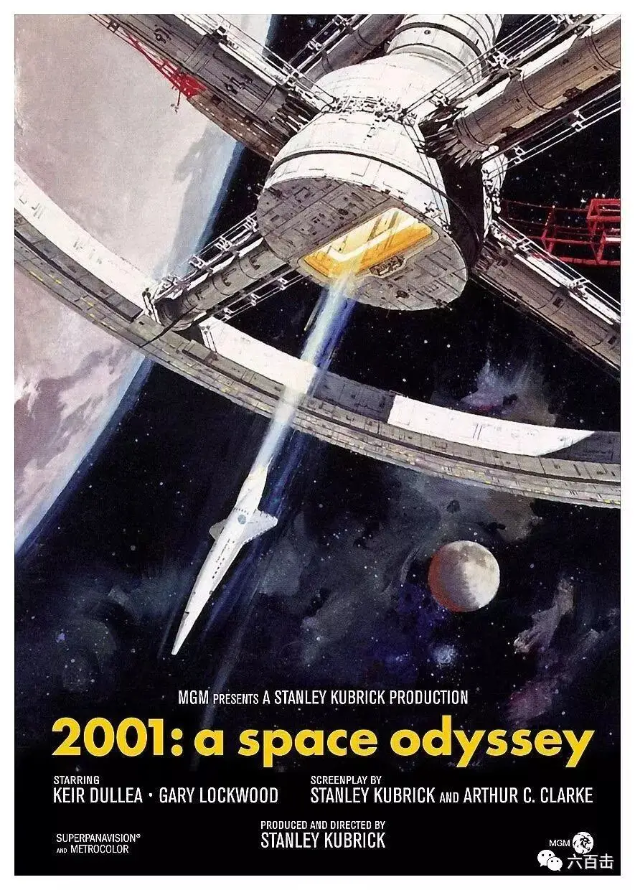
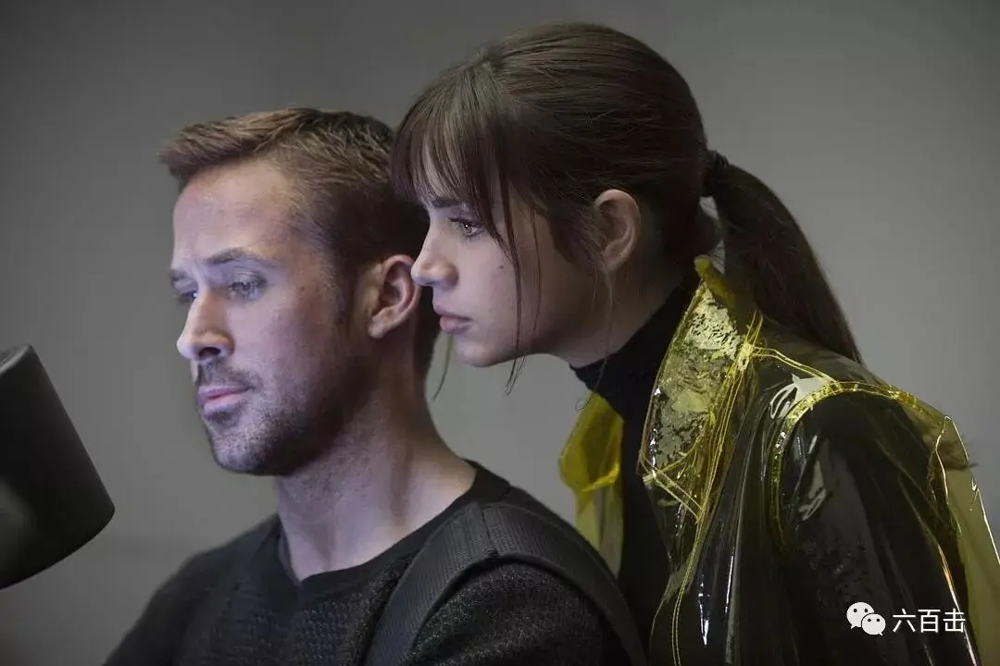
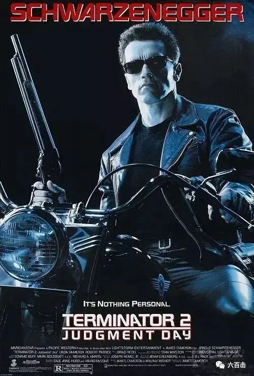

id="js_content" style="">
如果西方人藉以使自然服从目的的伟大革命竟以丧失它的精神自由而告终，那么这将是一种奇怪的命运
——克里斯托弗.道森
《银翼杀手2049》是一部既悲壮而又迷人的严肃科幻大片，较1982年雷德利·斯科特执导的前作，可圈可点的地方太多，除去风格化的视听语言和成熟生动的故事，成就本片深刻内涵的是它以反乌托邦的方式生动地刻画了未来世界，而这也是理解本片的钥匙。

盘点电影史中那些伟大的科幻大片，你会很吃惊的发现，西方对于未来的描述往往是暗黑和荒凉的，比如说詹姆斯·卡梅隆的《终结者》发生在未来机器人要将人类灭绝的背景中，他后来创作的《阿凡达》的故事发生在人类对潘多拉星球的资源掠夺背景之下，《生化危机》系列，生化武器几乎将全人类灭绝，奉俊昊的《雪国列车》中，由于人类发明的冷冻剂，使得整个地球处于极寒的冰封之中，人类只能躲在永动的列车中存活。
许多大师更是费尽心血，用大制作的科幻电影去重新寻求在未来早已被科技所“革除”的人性，比如说斯皮尔伯格的《人工智能》中的机器人小孩最大的愿望只是想要变成一个真正的人类小孩，去收获别人对他的爱， 克里斯托弗·诺兰的《星际穿越》中的重力场现象之下包藏着的是穿越时空的笃定的情谊，宇宙充满意志、智能、生命，而这些早已经被唯物论骄傲的宣布了“死亡”，斯坦利.库布里克牛逼哄哄的《2001太空漫游》则是科幻大衣包装之下的宗教拷问，借着宇宙和漫游在探索人类到底是谁，从哪里来，要到那里去。
《2001太空漫游》

《银翼杀手2049》也是一样，丹尼斯·维伦纽瓦只是将场景拉到一个异世界，可以毫无拘束的发挥想象去建构故事，电影对于未来世界的设想，除了科技上面的进步，也包括人类工业化过度所带来的恶果，环境被严重污染，地面上到处都是烟霾，而导演用风格化的色彩将污染场景处理成的非常迷人的画面，这构成了未来世界一种诡异的美，一种外表正常但内在已经腐烂的奇怪世界，丹尼斯·维伦纽瓦化腐朽为神奇，形成了本片独特诡异的影像风格。
而比起环境上的破坏，本片在思想意识层面上的反乌托邦表达更加深刻，不同于1982年《银翼杀手》的平行叙事，丹尼斯·维伦纽瓦将镜头都集中在k的身上，借着他的行动和所见所闻深刻揭露了这个“非人”的世界，主角k是银翼杀手，他同时也是复制人，外表冷酷内心却澎湃着巨大的情感需求，别人害怕他都不敢靠近他，他只能诉诸于他的AI机器人娇伊。当k无意中发现了一个惊人的秘密，这引起了他的身份焦虑，而之后k展开的惊心动魄的追寻背后，是k对于亲情的渴望，最终的悲剧结局则让我们对k充满了共鸣之下的同情——k是科技被神化的未来世界的悲剧牺牲品。
k与AI机器人娇伊互动

触发k爱情和亲情的来源都是虚假的，而这一切被导演处理的非常迷人甚至说真实，有时候会让k忘记，娇伊只是一个机器人，这种幻象既美丽又让人心碎，这种距离看似接近却又那么遥远，而当迷人的梦幻破灭之时，这个未来世界的银翼杀手k成为了西西弗斯般的悲剧英雄，这不正是科技被偶像化的今天给我们加增的愁烦么？很可惜，很多人还没有从科技所塑造的美丽迷幻世界中清醒过来。
正如彼得伯格，在《无家的心灵：现代化与意识》中提出，技术社会倾向于培养高度实用和深度怀疑的认识风格，这一思维风格的实用特征归因于科学和技术以实事求是的态度面对对象世界。其怀疑特性透露出如下假设，即认识世界的科学方法高于其他一切方法，这一独特的认识风格，不仅是科学家和工程师们的特征，而且在某种程度上也体现了所有技术产品使用者的态度，简短一点说，技术实用主义和科学怀疑主义导致有时被称为“科学至上主义”的观点，即阻止人们相信一切还尚未用科学加以证明的事物，并于此相反，决不怀疑一切带有现代科学和技术印记的事物，科学至上主义遮蔽了科学和技术发展在道德上的模糊性，也阻碍我们在伦理上反思它，因为它假设科学和技术具有确定不疑的实证价值，坚信科学和技术的发展按本质而言就是善良的。但是这个潜设是不是要打一个问号？
任何事物都是处境性的，科技本来是造福我们的工具，可怕的是，我们要将科学研究的处境扩展到所有领域，包括道德、宗教、人际关系，正如黑格尔所看见的，技术成为了形而上学，而丹尼.波斯曼对于这种不易察觉的可怕有更加生动的描绘：“技术垄断是一种文化状态。它也是一种思想状态，它包括神化技术，这意味着文化从技术中寻求权威、在技术中得到满足，并听命于技术。它要求形成新的社会秩序，并必然导致与传统信念相联系的绝大部分事物迅速瓦解”，这样，在现代化的今天，科学至上主义就成为了新的“宗教“，一种我们自我感觉高大上的”宗教“，这都足以熄灭我们的思考，将世界非常自我的缩小为只是自己可以理解、可以证明的世界，我们已经很难从技术动力之外来理解技术的思想问题。这样的科学至上主义，也势必会不可避免地将人类世界推向颓废、脏乱、苍凉的未来世界，那个世界谈恋爱之前首先需要进行非常理性的家产量化分析，看双方是否能够最大化的匹配和获利，在你亲吻你的爱人之前，需要提前用先进机器测试一下他是否真的爱你，在那个非人的世界里，我们不得不将自己的情感依赖于更加高端的充气娃娃、AI机器人、电子游戏和虚拟偶像中。
《人工智能》，只是想成为真正的人的机器人小孩
而这种科技至上的偶像世界中，严重代价更深的体现在意识层次上，科学和技术鼓励我们用量化计算取代质的判断，用无人情味的技术手段取代真正的人类目的，清除宗教意义世界，并夸大操纵性的制造具有重要性，所有这些倾向都相当直接地表现在现代生活的世俗性和非人化，而这种强烈的控制欲也是非常可怕的，CS.路易斯很讽刺的说“人类有力量让自己合乎自己的意愿，这意味着.........一些人有力量让另外一些人合乎他们自己的意愿”，这不正是《银翼杀手》中复制人想要摆脱人类控制，而人类派银翼杀手清除这些叛逃复制人的思想根源么？这背后是傲慢无比的控制欲。
《终结者》

而这种偶像的深处是我们现代人的焦虑和不安，“对于现代技术人类来说，重要的不是看清我们如何能适合固定的自然秩序，而是相反，自然过程如何能被利用来为人类利益服务，我们不是在认识的意义上，而是相反，首先在制造的意义上，理解人类的使命，实际上我们倾向于把我们自己理解为必须不断通过科学和技术进行建设、建造、构造的存在。这一自我理解自然而然会导致不安定的行动主义，在这种行动主义中我们最终把我们自己想象为宇宙中唯一的创造性主题”，当我们神化以后，人类对于潘多拉星球的掠夺，对于当地纳美人的血腥屠杀显得那么的正常和必要，爱情甚至亲情都可以成为我们利用的工具。
我们已经忘记我们技术发展的初衷，正如卡尔.曼德姆所言“当程序分析（科学）首次为人使用时，仍然存在由这种行为指定的目的或目标（往往由早期宗教所理解的世界中的某些部分所组成）。人类努力了解世界，是为了能把它塑造得与这个终极目标相一致；社会分析时，是为了达到更公正或者更讨神喜悦的社会生活形式；人类关注灵魂，是为了掌握通向拯救的道路。但是人类分析越进步，他们的目标从他们的视界中消失得就越远，以至于今天的研究人员可以引用尼采的话说：“我已经忘记了我为何开始”
这些伟大的科幻巨作，都在控诉着科学至上主义的“非人世界”，所以当银翼杀手k面对巨大投影女郎的挑逗时，他看到了这种幻象的欺骗性，即使他并非命定之人，k还是选择营救戴克，k的觉醒不正是在“非人”的世界中重新肯定道德的价值么？终结者、阿凡达拼死拯救的也不正是已经堕落的人性么？
k暗中保护戴克
科技极大的膨胀了我们的骄傲,“我们的时代因最终获得免于审查制度的自由而沾沾自喜，这是所有时代的自由主义者们为之风斗的自由.......这些伟大成就归功于新理性主义精神，据说这一理性主义最终能够揭开神秘的思想、宗教以及像自由和尊严一类强大幻觉给人带来的蒙蔽。科学给我们带来了战胜无知的巨大胜利。但是如果作进一步的考察的话，这一胜利也可被看作是最大无知的奥威尔式的胜利：我们所获得的只是新的因循守旧，它固然使我们谈论任何以工具理性的功能语言说出的话，但他阻碍我们朝前......'永活的真理'......因此，我们虽然可以讨论生活的构造及其客观的草种，却不能谈及神、恩典或道德。"
我们需要冷静的看待科技的发展，让科学研究方法和思想回到本位，要知道，一切的科技发展都是出于爱邻舍的原因，否则未来就是地狱，有了这样的视野，大家再去电影院刷《银翼杀手2046》时，一定会看的更加明白透彻。
相关阅读：
《乡愁》 | 没有一个人能够将信仰拍的如此诗意和凝重
一个唯科学主义者的悲剧
关注并回复： 银翼杀手 获取雷德利·斯科特的经典之作
这里没有挑逗你眼目情欲的小鲜肉
也没有挑动你肉体情欲的段子
更没有膨胀你今生骄傲的鸡血
我们只在乎那些最质朴真诚的作品
在那里我们才能恢复真正的想象力
我们也坚信这才是我们真正需要的

ID:Six_hundred_hits
长按二维码，一键关注
【六百击】
-END-
电影评论
尽情分享朋友圈

苹果打赏通道